名古屋の中心部、新栄の近くにある布池教会に来ている。
今日、ここで日系ペルー人の祭りがあると聞きつけたからだ。
（ここに至る経緯はあまりにも面白い出会いがあったので、その辺はまた別の機会に話そうと思う）
日本で日系ペルーの人たちがどんな祭りをしているのか、二重三重に洋の東西を行き来した末に現れる祭りとはいかなるものなのか、その実態が知りたかったのである。
この教会はゴシック様式の立派な教会で、名古屋のカトリック教会の中心的存在である。
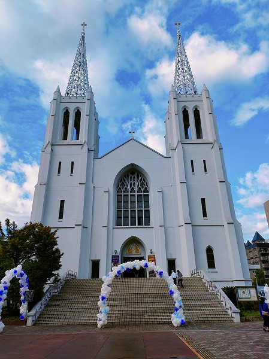
とはいえこの祭り自体をこの教会が行っているわけではない。
話がやや入り組んでいて恐縮なのだが、この祭りは名古屋市の郊外にある緑ヶ丘教会という在日ペール人や日系ペルー人のカトリック信者が集っている教会が主体になって行われるのだ。
現在、我が国には大勢の外国人や外国にルーツを持つ人々が住んでいる。
その中で日系ブラジル人と日系ペルー人はバブル期の人手不足、特に自動車産業のそれを補うために来日した過去を持つ。
特に北関東と中京地区に多く居住しているのは自動車産業の分布から見ればごく自然な事だ。
彼らは主にカトリックの信者である。
そして南米のカトリックはヨーロッパのカトリックとも日本のカトリックとも違う独自のスタイルを保持しているのだ。
そのため日本人が通うカトリック教会とは相容れない部分もあり、必然的に日系ペルー人が集う教会が日本各地に生まれた。
南米系とひとことで言うが、その実情は複雑だ。
一番多いブラジル系の人たちも同じカトリックだが、言語がポルトガル語なので別のコミュニティーが形成されている。
（そもそもペルー人とブラジル人は基本仲悪いし）
ペルー系はブラジル系の人々よりは少ないが、国別に言えば愛知県下で7番目に多い存在だ。
日本全国の平均からしたらマイナーな存在かも知れないが、こと愛知県では驚くほどメジャーな存在なのだ、という大前提を踏まえて祭りに話を戻す。
開始時刻の少し前に会場を訪れる。
丁度昼時だったので、教会の地下のホールでは様々なペルー料理が提供されていたので私も腹ごしらえをする。
偶々隣に座っていた日系ペルー人の方から祭りの概要を伺う。
曰く、この祭りの主催は緑ヶ丘教会で、布池教会は基本的に場所を提供している立場らしい。
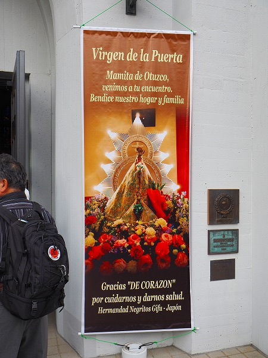
そして今回はゲストとして岐阜のペルー系教会の人達も参加するという。
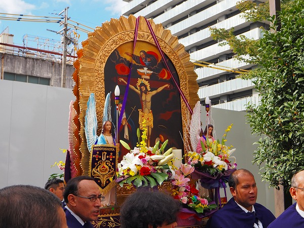
食事を終え、外に出てみると徐々に祭りの準備が始まっている。
教会の正面にはキリスト像を掲げた神輿のようなものがスタンバイされていた。
神輿のような、というよりまんま神輿である。
これを司祭たちが担ぐのだろうか。
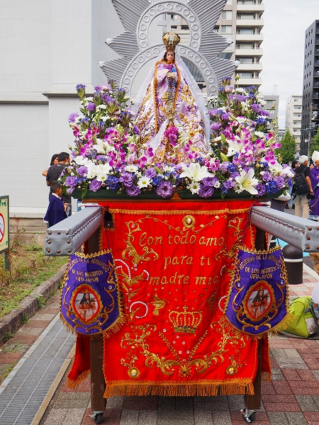
一方、教会の脇にはゲストの岐阜の教会の神輿が置かれていた。
こちらはマリア像が掲げられていた。
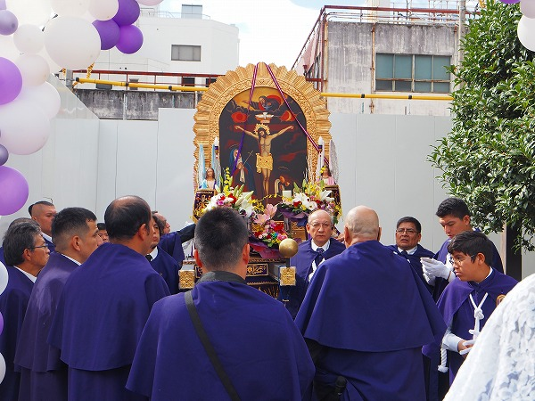
段々祭りに参加する人達が集まって来た。
思いの外大規模な祭りのようだ。
どんな祭りが行われるのか全く判らないので、少し緊張する。
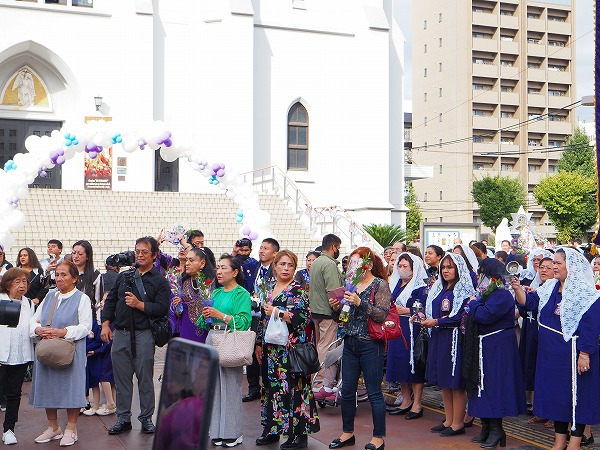
教会の正面には既に大勢の人達が集まっている。
ほぼ日系ペルー人の方々だが、中でも女性が多かったのが印象的だった。
緑ヶ丘教会の旗。
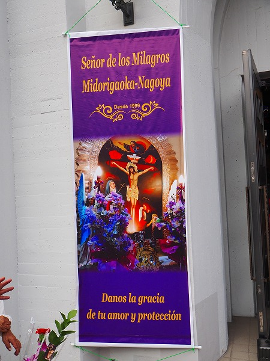
セニョール・デ・ロス・ミラグロスとある。
これは「奇跡の主」という意味でペルーで圧倒的な人気を誇るキリストの像のことだ。
南米のカトリックは決して一枚岩ではなく、各地域に独自の信仰対象が存在している。
日本人からすると判りにくいが、ペルーはセニョール・デ・ロス・ミラグロス、ブラジルはアパレシーダの女神、メキシコはグアダルーペの女神、とそれぞれ異なる聖人や聖母を信仰しているのだ。
セニョール・デ・ロス・ミラグロスは壁に描かれたキリストの絵が大地震に耐えたり、消そうとしたのに消せなかった、という幾つかの奇跡譚がベースになっている。
その後、リマのカトリック教会もこの奇跡を認め、国民的な信仰へと昇華していくのだ。
さて。
そろそろ祭りが始まるようだ。
ベールを被った女性たちが集まり法具の準備をしている。
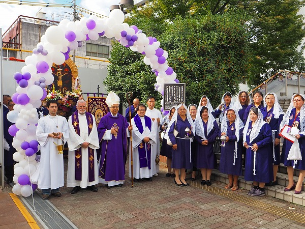
祭りの前に記念撮影。
祭りを執り行う人たちは紫の法衣を着ている。
布池教会の司祭や神父の姿も見える。
いよいよ祭りの始まりである。
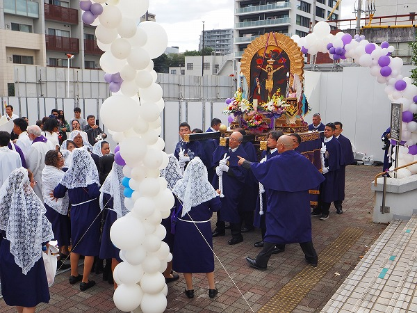
紫の法衣を着た司祭たちが神輿を担いで動き始める。
荘厳な音楽に乗せてゆっくりと神輿は進む。
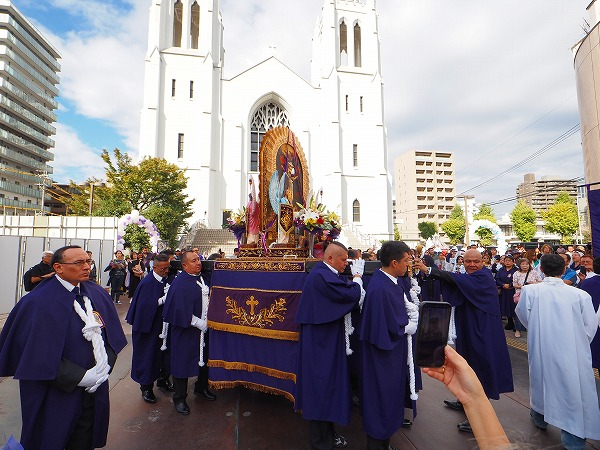
心のどこかで陽気なラテンのリズムを期待していた身としては、意外な気もしたが、カトリックの祭りなのだからこちらが正解なのか、と思い直す。
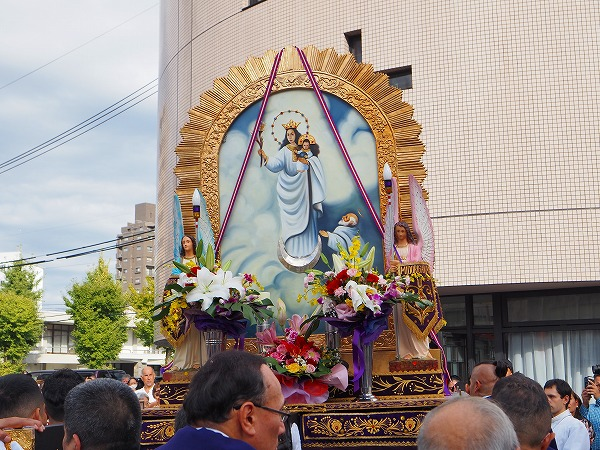
神輿の裏側。マリア像が描かれている。
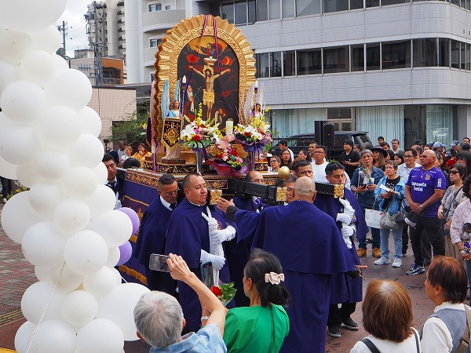
悲し気な曲調に乗せて神輿は静々と進む。
蔡列は途中で何度も止まる。
その度に能登の震災で被災した人々に祈りを捧げたり、祭りに参加した人々の健康を祈ったり、子供の成長を祈ったりしていた。
その度に周りにいた信者の人々は神輿に近寄り祈りを捧げていた。
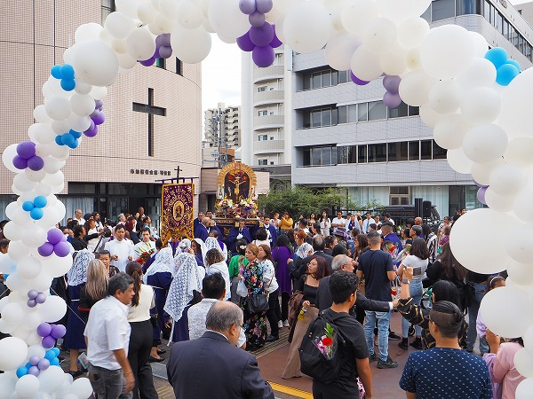
教会前のそんなに広くはないスペースを時間をかけて一周すると神輿は静かに動きをとめる。
ここからどうやらはゲストの岐阜の教会のターンのようだ。
それまでの厳粛で悲し気な音楽とは打って変わってマーチングのようなリズムの明るい音楽が流れ始める。
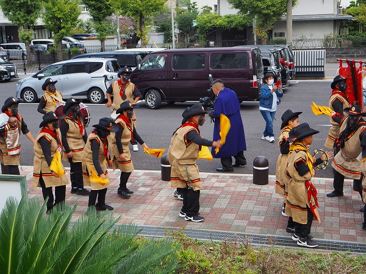
それに合わせて後続の集団が踊り始める。
その姿を見てギョッとした。
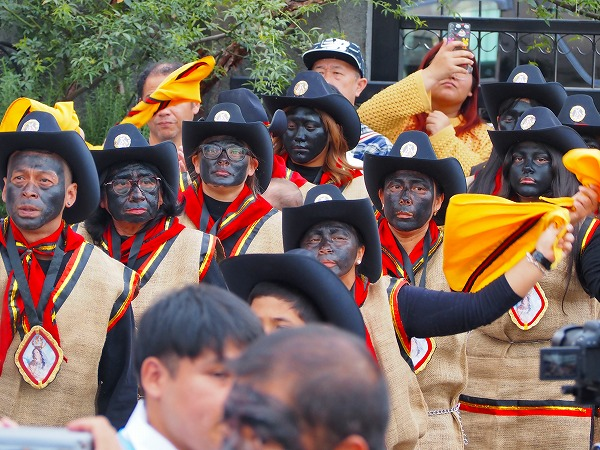
簡素な麻布の貫頭衣、黒い帽子、黄色い布を振りかざし踊る面々の顔は真っ黒に塗られているのだ！
みんな一体どうした？
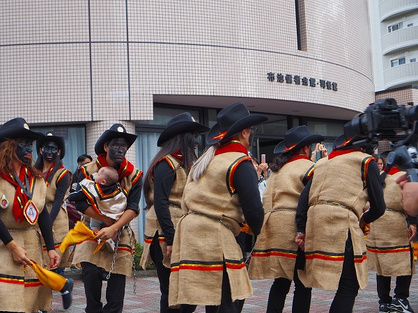
先程の蔡列が陰であれば、間違いなく陽の蔡列である。
賑やかな音楽に、観客も心なしか楽しそうな表情を浮かべる。
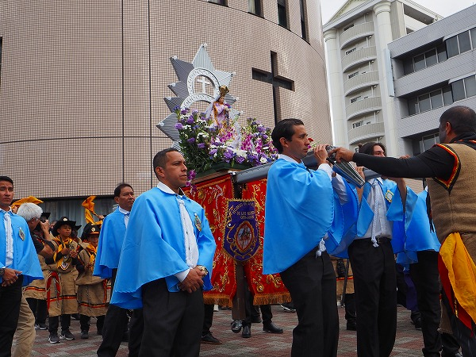
水色の法衣を着た人々がマリア像を乗せた神輿を担ぐ。
リズムは賑やかだが神輿自体は粛々と進んでいく。
貫頭衣の集団は音楽に合わせて手に持った黄色い布を上下に振っている。
そのプリミティブなリズムと踊りは単純だが、どこかペルーの根源的な「何か」を呼び起こしているようだ。
こちらの神輿もゆっくりと場内を練り歩く。
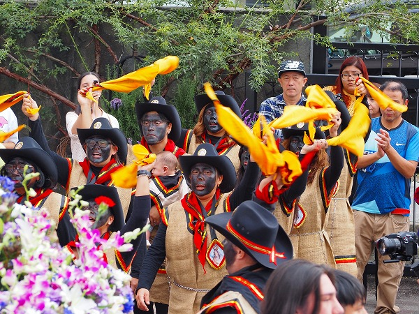
その後で踊る集団。
どうしても気になるのは真っ黒に塗られた顔。
これはアフリカからペルーに連れてこられた黒人奴隷を偲んでその容姿を模したものだという。
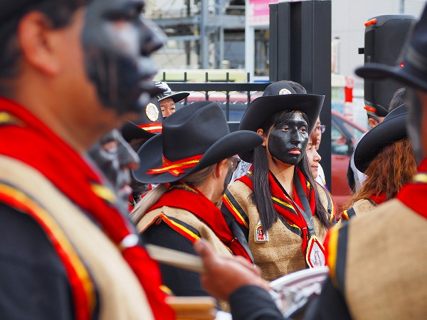
うむむ。
昨今、アフロアメリカンの真似をして顔を黒く塗る（昔のラッツ＆スターみたいって言って判るかな？）こと自体が差別的な行為とされている御時世だが、大丈夫なのか？
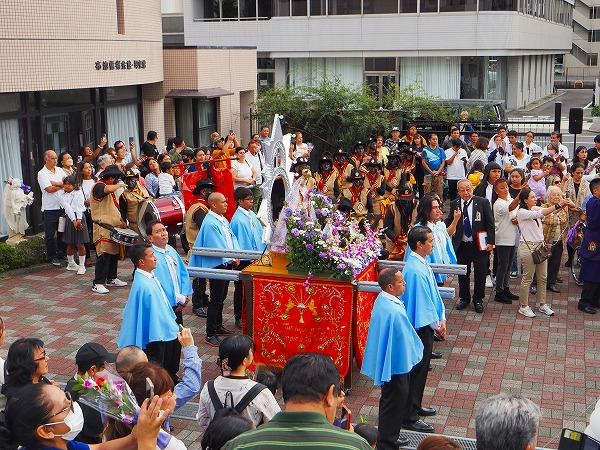
そんなこちら側の勝手な心配をよそに黒塗りの人々は自信満々に踊っている。
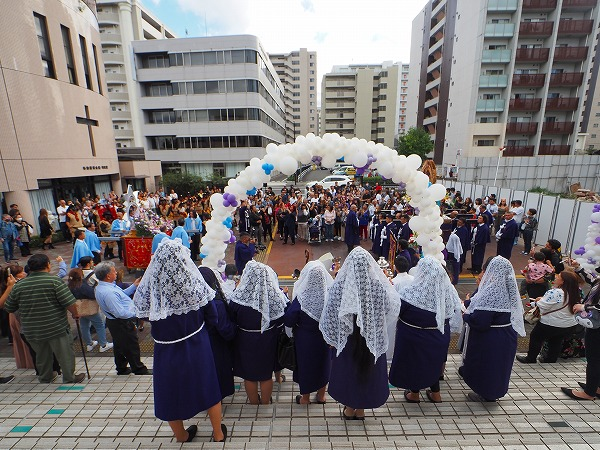
彼らにしてみれば伝統芸能の一種だから気にする必要などないのだろう。
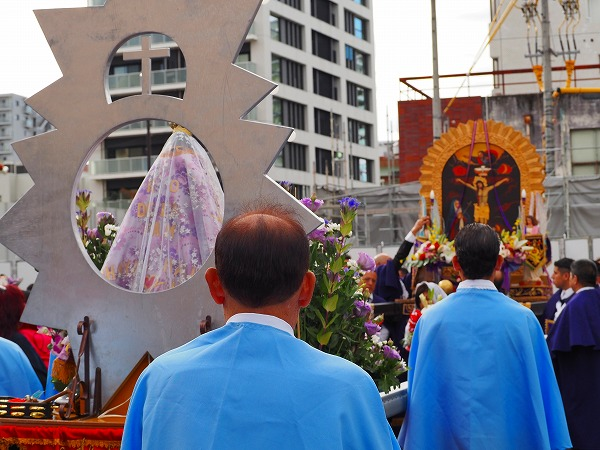
そうこうするうちにチーム岐阜の神輿も停まり、チーム緑ヶ丘の神輿の正面に正対する。
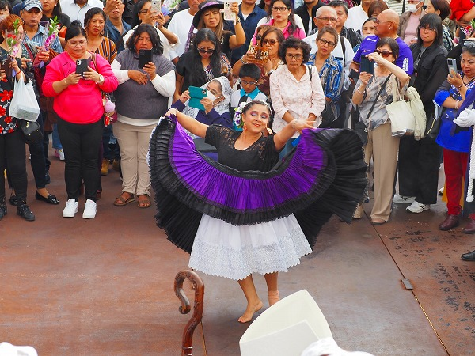
するとその神輿と神輿の間にひとりの女性が割って入り、踊り出した。
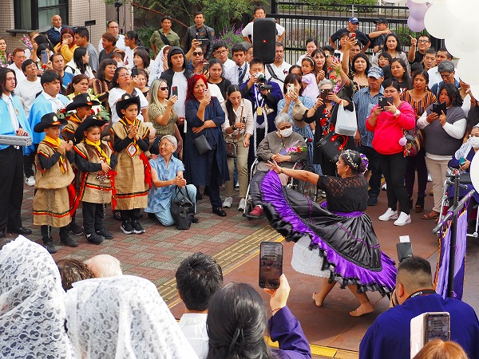
楽しそうに踊るその姿に観衆一同感激しているようだ。
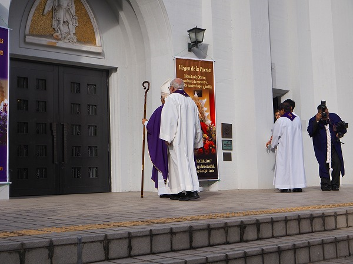
ここで祭りはひと段落。
司祭をはじめとした関係者が次々と教会の中に入っていく。
すると皆、階段をのぼって教会内に進んでいく。
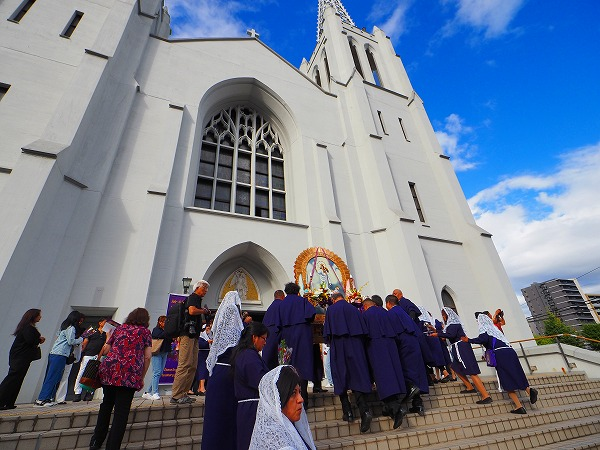
先程まで神輿を担いでいた人たちも神輿の上のキリスト像が描かれた部分だけを外して教会の中に運んでいく。
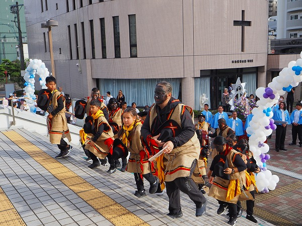
もちろんチーム岐阜の面々も教会内に向かう。
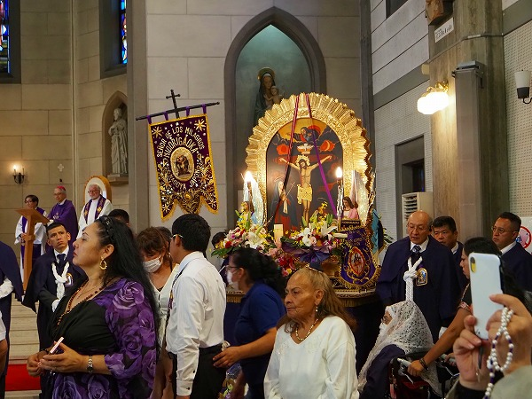
その後、全員が教会内に着席し、全員で讃美歌を歌って祭りはフィナーレに向かう。
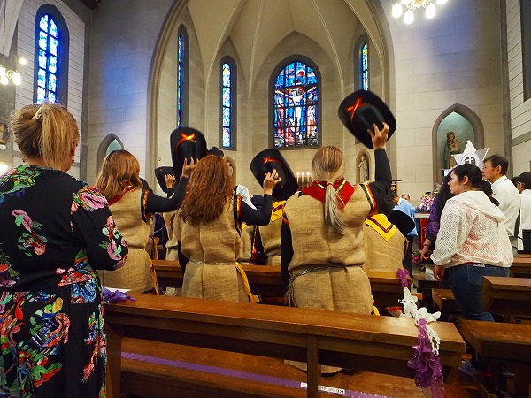
それにしても不思議な体験だった。
パレスチナで生まれヨーロッパで広まったキリスト教が大航海時代に南米大陸に渡り、地元の信仰と混成しながら広がり、近代に入植した日本人にも伝播し、再び日本に戻ってくる。
そんな地球を一周して、更に世界中に広がっていった壮大なる宗教の伝言ゲームの終着点のひとつを目撃出来たのだから。
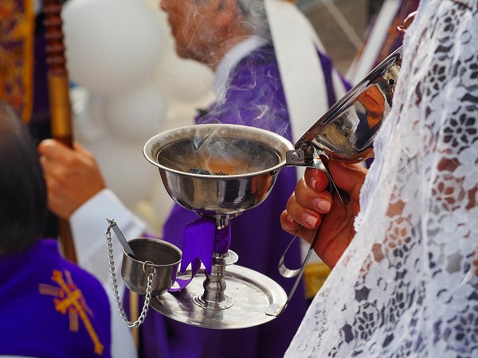
隣ではどう見ても日本人にしか見えない高齢のお婆ちゃんが流暢なスペイン語で讃美歌を朗々と歌っていたのが印象的だった。
ＤＮＡは日本人なのに心はペルー人、という彼女が辿って来た人生を想像する。
普段我々が思い浮かべている国際化とか多様性とか民族という概念がいかに一面的で薄っぺらいものなのかを突きつけられたような思いだった。